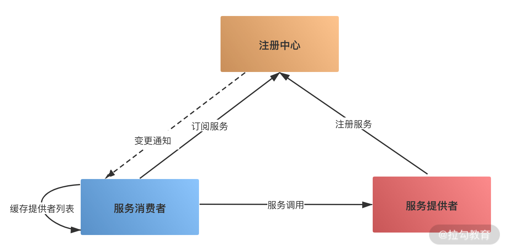
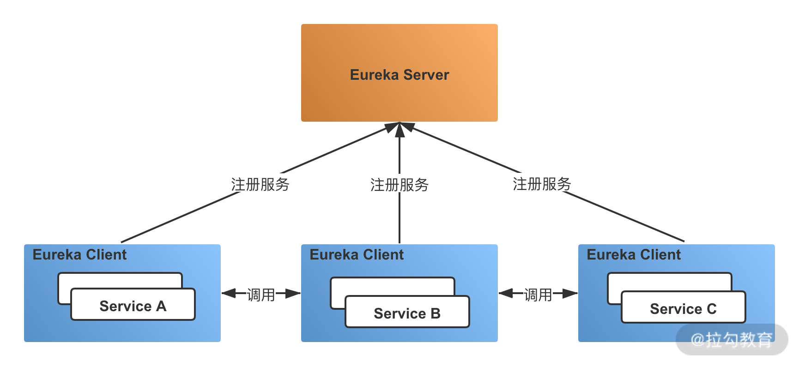

- 00 开篇词：搭建分布式知识体系，挑战高薪 Offer.md.html
- 01 如何证明分布式系统的 CAP 理论？.md.html
- 02 不同数据一致性模型有哪些应用？.md.html
- 03 如何透彻理解 Paxos 算法？.md.html
- 04 ZooKeeper 如何保证数据一致性？.md.html
- 05 共识问题：区块链如何确认记账权？.md.html
- 06 如何准备一线互联网公司面试？.md.html
- 07 分布式事务有哪些解决方案？.md.html
- 08 对比两阶段提交，三阶段协议有哪些改进？.md.html
- 09 MySQL 数据库如何实现 XA 规范？.md.html
- 10 如何在业务中体现 TCC 事务模型？.md.html
- 11 分布式锁有哪些应用场景和实现？.md.html
- 12 如何使用 Redis 快速实现分布式锁？.md.html
- 13 分布式事务考点梳理 + 高频面试题.md.html
- 14 如何理解 RPC 远程服务调用？.md.html
- 15 为什么微服务需要 API 网关？.md.html
- 16 如何实现服务注册与发现？.md.html
- 17 如何实现分布式调用跟踪？.md.html
- 18 分布式下如何实现配置管理？.md.html
- 19 容器化升级对服务有哪些影响？.md.html
- 20 ServiceMesh：服务网格有哪些应用？.md.html
- 21 Dubbo vs Spring Cloud：两大技术栈如何选型？.md.html
- 22 分布式服务考点梳理 + 高频面试题.md.html
- 23 读写分离如何在业务中落地？.md.html
- 24 为什么需要分库分表，如何实现？.md.html
- 25 存储拆分后，如何解决唯一主键问题？.md.html
- 26 分库分表以后，如何实现扩容？.md.html
- 27 NoSQL 数据库有哪些典型应用？.md.html
- 28 ElasticSearch 是如何建立索引的？.md.html
- 29 分布式存储考点梳理 + 高频面试题.md.html
- 30 消息队列有哪些应用场景？.md.html
- 31 集群消费和广播消费有什么区别？.md.html
- 32 业务上需要顺序消费，怎么保证时序性？.md.html
- 33 消息幂等：如何保证消息不被重复消费？.md.html
- 34 高可用：如何实现消息队列的 HA？.md.html
- 35 消息队列选型：Kafka 如何实现高性能？.md.html
- 36 消息队列选型：RocketMQ 适用哪些场景？.md.html
- 37 消息队列考点梳理 + 高频面试题.md.html
- 38 不止业务缓存，分布式系统中还有哪些缓存？.md.html
- 39 如何避免缓存穿透、缓存击穿、缓存雪崩？.md.html
- 40 经典问题：先更新数据库，还是先更新缓存？.md.html
- 41 失效策略：缓存过期都有哪些策略？.md.html
- 42 负载均衡：一致性哈希解决了哪些问题？.md.html
- 43 缓存高可用：缓存如何保证高可用？.md.html
- 44 分布式缓存考点梳理 + 高频面试题.md.html
- 45 从双十一看高可用的保障方式.md.html
- 46 高并发场景下如何实现系统限流？.md.html
- 47 降级和熔断：如何增强服务稳定性？.md.html
- 48 如何选择适合业务的负载均衡策略？.md.html
- 49 线上服务有哪些稳定性指标？.md.html
- 50 分布式下有哪些好用的监控组件？.md.html
- 51 分布式下如何实现统一日志系统？.md.html
- 52 分布式路漫漫，厚积薄发才是王道.md.html
16 如何实现服务注册与发现？
你好，欢迎来到第 14 课时，本课时主要讲解如何实现服务注册与发现。
在分布式服务中，服务注册和发现是一个特别重要的概念，为什么需要服务注册和发现？常用的服务发现组件有哪些？服务注册和发现对一致性有哪些要求呢?下面我们就来学习服务发现相关的知识。
为什么需要服务注册和发现
分布式系统下微服务架构的一个重要特性就是可以快速上线或下线，从而可以让服务进行水平扩展，以保证服务的可用性。
假设有一个电商会员服务，随着业务发展，服务器负载越来越高，需要新增服务器。如果没有服务注册与发现，就要把新的服务器地址配置到所有依赖会员模块的服务，并相继重启它们，这显然是不合理的。
服务注册与发现就是保证当服务上下线发生变更时，服务消费者和服务提供者能够保持正常通信。
有了服务注册和发现机制，消费者不需要知道具体服务提供者的真实物理地址就可以进行调用，也无须知道具体有多少个服务者可用；而服务提供者只需要注册到注册中心，就可以对外提供服务，在对外服务时不需要知道具体是哪些服务调用了自己。
服务注册和发现原理
服务注册和发现的基本流程如下图所示：

首先，在服务启动时，服务提供者会向注册中心注册服务，暴露自己的地址和端口等，注册中心会更新服务列表。服务消费者启动时会向注册中心请求可用的服务地址，并且在本地缓存一份提供者列表，这样在注册中心宕机时仍然可以正常调用服务。
如果提供者集群发生变更，注册中心会将变更推送给服务消费者，更新可用的服务地址列表。
典型服务发现组件的选型
在目前的微服务解决方案中，有三种典型的服务发现组件，分别是 ZooKeeper、Eureka 和 Nacos。
ZooKeeper
ZooKeeper 主要应用在 Dubbo 的注册中心实现，由于 Dubbo 在国内的流行，Dubbo + ZooKeeper 的典型服务化方案，使得 ZooKeeper 成为注册中心的经典解决方案。
ZooKeeper 是一个树形结构的目录服务，支持变更推送。使用 ZooKeeper 实现服务注册，就是应用了这种目录结构。
服务提供者在启动的时候，会在 ZooKeeper 上注册服务。以 com.dubbo.DemoService 为例，注册服务，其实就是在 ZooKeeper 的 /dubbo/com.dubbo.DemoService/providers 节点下创建一个子节点，并写入自己的 URL 地址，这就代表了 com.dubbo.DemoService 这个服务的一个提供者。
服务消费者在启动的时候，会向 ZooKeeper 注册中心订阅服务列表，就是读取并订阅 ZooKeeper 上 /dubbo/com.dubbo.DemoService/providers 节点下的所有子节点，并解析出所有提供者的 URL 地址来作为该服务地址列表。
Eureka
在 Spring Cloud 中，提供了 Eureka 来实现服务发现功能。Eureka 采用的是 Server 和 Client 的模式进行设计，Eureka Server 扮演了服务注册中心的角色，为 Client 提供服务注册和发现的功能。
Eureka Client 通过客户端注册的方式暴露服务，通过注解等方式嵌入到服务提供者的代码中，当服务启动时，服务发现组件会向注册中心注册自身提供的服务，并周期性地发送心跳来更新服务。

如果连续多次心跳不能够发现服务，那么 Eureka Server 就会将这个服务节点从服务注册表中移除，各个服务之间会通过注册中心的注册信息来实现调用。
Euerka 在 Spring Cloud 中广泛应用，目前社区中集成的是 1.0 版本，在后续的版本更新中，Netflix 宣布 Euerka 2.0 闭源，于是开源社区中也出现了许多新的服务发现组件，比如 Spring Cloud Alibaba Nacos。
Nacos
Nacos 是阿里巴巴推出来的一个开源项目，提供了服务注册和发现功能，使用 Nacos 可以方便地集成 Spring Cloud 框架。如果正在使用 Eureka 或者 Consul，可以通过少量的代码就能迁移到 Nacos 上。
Nacos 的应用和 Eureka 类似，独立于系统架构，需要部署 Nacos Server。除了服务注册和发现之外，Nacos 还提供了配置管理、元数据管理和流量管理等功能，并且提供了一个可视化的控制台管理界面。

关于 Nacos 的更多应用，可以在 Nacos 官网找到相关的文档。
一致性对比
在讨论分布式系统时，一致性是一个绕不开的话题，在服务发现中也是一样。CP 模型优先保证一致性，可能导致注册中心可用性降低，AP 模型优先保证可用性，可能出现服务错误。
为了保证微服务的高可用，避免单点故障，注册中心一般是通过集群的方式来对外服务，比如 ZooKeeper 集群。
ZooKeeper 核心算法是 Zab，实现的是 CP 一致性，所以 ZooKeeper 作为服务发现解决方案，在使用 ZooKeeper 获取服务列表时，如果 ZooKeeper 正在选主，或者 ZooKeeper 集群中半数以上机器不可用时，那么将无法获得数据。
在 Spring Cloud Eureka 中，各个节点都是平等的，几个节点挂掉不影响正常节点的工作，剩余的节点依然可以提供注册和查询服务。只要有一台 Eureka 还在，就能保证注册服务可用，只不过查到的信息可能不是最新的版本，不保证一致性。
Spring Cloud Nacos 在 1.0.0 版本正式支持 AP 和 CP 两种一致性协议，可以动态切换，感兴趣的同学可以去了解一下。
对于服务注册和发现场景来说，一般认为，可用性比数据一致性更加重要。针对同一个服务，即使注册中心的不同节点保存的服务提供者信息不相同，会出现部分提供者地址不存在等，不会导致严重的服务不可用。对于服务消费者来说，能消费才是最重要的，拿到可能不正确的服务实例信息后尝试消费，也要比因为无法获取实例信息而拒绝服务好。
总结
这一课时主要分析了服务注册和发现的基本流程、几种典型的服务发现组件，以及在不同服务发现组件中，是如何实现一致性的。
你可以结合实际工作思考一下，目前公司里的服务发现是如何实现的，是自研还是使用开源组件，以及为什么选择这种服务注册和发现方式？